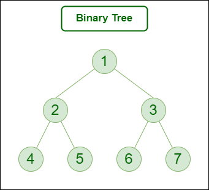

Trees in Data Structures
Tree Visualizations

Basic Tree Structure
A basic tree structure showing the root node, parent-child relationships, and leaf nodes. The root is at the top, and each node can have multiple children.
Tree Components
- Root Node: The topmost node in the tree. It has no parent and serves as the starting point for traversing the tree.
- Parent Node: Any node that has one or more child nodes. A parent node is connected to its children through edges.
- Child Node: A node that has a parent node. Each child node is connected to its parent through an edge.
- Sibling Nodes: Nodes that share the same parent. They are at the same level in the tree hierarchy.
- Leaf Node: A node that has no children. It represents the end of a branch in the tree.
- Internal Node: Any node that has at least one child node (non-leaf nodes).
- Edge: The connection between a parent node and its child node.
- Path: A sequence of nodes and edges from the root to any other node in the tree.
- Level: The distance from the root node. The root is at level 0, its children at level 1, and so on.
- Height: The length of the longest path from the root to a leaf node.
- Depth: The length of the path from the root to a specific node.
- Degree: The number of children a node has.
Tree Properties
- Each node (except the root) has exactly one parent
- There are no cycles in a tree structure
- There is exactly one path from the root to any node
- The number of edges is always one less than the number of nodes
- Adding an edge between any two nodes creates a cycle
- Removing any edge disconnects the tree

Types of Trees
A binary tree where each node has at most two children, commonly referred to as left and right children. This structure is fundamental for many tree-based algorithms.
Binary Tree
A tree where each node can have at most two children:
- Each node has 0, 1, or 2 children
- Children are typically called "left" and "right" child
- Common in search algorithms and expression parsing
- Examples: Binary Search Trees (BST), AVL Trees
Ternary Tree
A tree where each node can have at most three children:
- Each node has 0 to 3 children
- Often used in specialized searching algorithms
- Common in Ternary Search Trees (TST)
- Useful for storing and searching strings efficiently
N-ary Tree
A tree where each node can have any number of children:
- Also known as a k-ary tree or multiway tree
- Each node can have 0 to n children
- Used in file systems (folders can have multiple files)
- Common in representing hierarchical data structures
- Examples: DOM tree, file system hierarchy

Balanced Tree
A balanced tree maintains approximately equal height for all subtrees, ensuring O(log n) time complexity for operations. Examples include AVL trees and Red-Black trees.